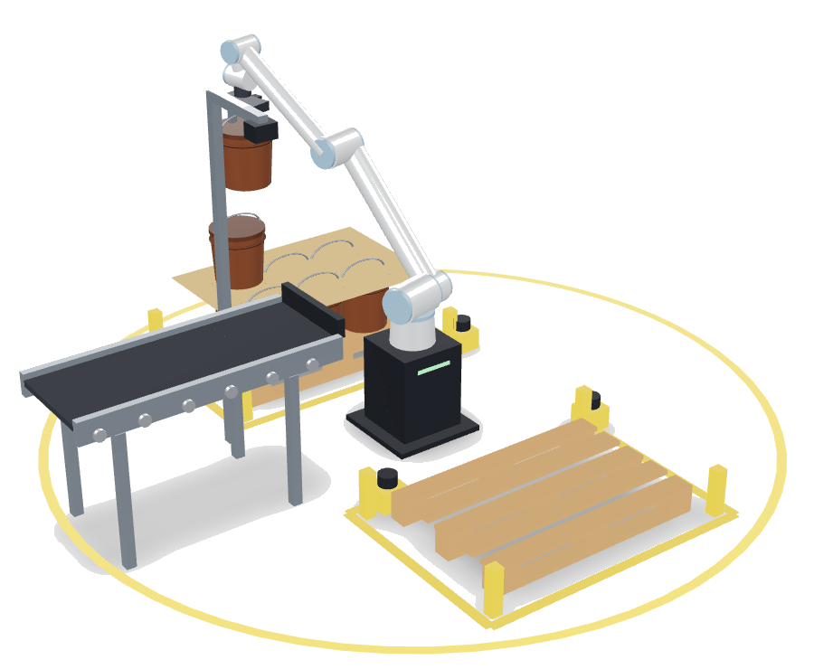

✓
PaletCheck UR20
· pentru Tech-ConPentru directorii de producție din industria alimentară
Cine vă paletizează
gălețile în schimbul
de noapte?
Aflați în 2 minute, de pe telefon, dacă linia dumneavoastră se potrivește cu o celulă robotică UR20 și vedeți-o în AR, direct în hala dumneavoastră.

20 kgsarcină utilă UR20, pentru găleți pline până la ~15 kg
2 poziții de paletpaletul plin se schimbă fără să oprim linia
AR la scară reală~3,9 × 3,9 m, plasată în hala dvs. de pe telefon
Deja în România2 celule UR20 paletizează găleți la PURATOS